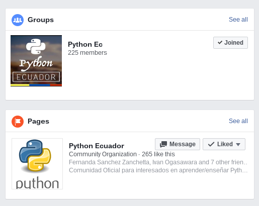
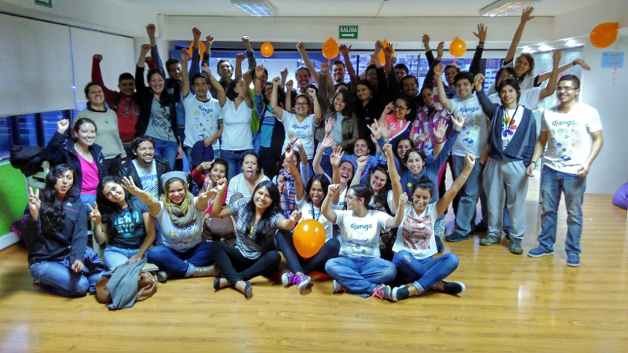

Keynote
Turicas aka Álvaro Justen
2017-05-06 - Rio de Janeiro/RJ, Brazil
# Keynote**s**
- Like lightning talks
- Linked (`weakref`)
A Bit of History...

Ecuador: Nature
Antisana, Ecuador
(Photo by Álvaro Justen, CC-BY-SA)
Ecuador: Python?

(Data by Facebook Search)
## PythonQuito: Challenges
- Portuñol
- Contacts in Ecuador: almost zero
- No community
PythonQuito: DjangoGirls
(~35 girls)

## PythonQuito: Lessons Learned
- Think how good is **to have a community**
- And to have an inclusive and very active one
- Cultural aspects count
- Laws can disturb
## PythonSudeste:
## A Great Privilege
## **ENJOY!**
## And **thank the organization**
Part 2:
To The Definitions

(Picture by Max
Pixel, CC-0)

[planalto.gov.br/ccivil_03/LEIS/L9610.htm](http://www.planalto.gov.br/ccivil_03/LEIS/L9610.htm)
“Software license is a legal instrument (usually by
way of contract law, with or without printed material) governing
the use or redistribution of software”
-- Wikipedia
## Have you read the copyright law?

[planalto.gov.br/ccivil_03/LEIS/L9610.htm](http://www.planalto.gov.br/ccivil_03/LEIS/L9610.htm)

[planalto.gov.br/ccivil_03/leis/L9609.htm](http://www.planalto.gov.br/ccivil_03/leis/L9609.htm)
## You're probably not the owner

## Ask for permission by default


(Almost) Never ends

## Have you read the license?

## Rights in copyright
(from [Wikipedia](https://en.wikipedia.org/wiki/Software_license#/media/File:Software-license-classification-mark-webbink.svg))

## Richard M. Stallman
(picture by
[Wikipedia](https://en.wikipedia.org/wiki/Richard_Stallman#/media/File:Richard_Stallman_-_F%C3%AAte_de_l%27Humanit%C3%A9_2014_-_010.jpg))

## The four essential freedoms
(from [gnu.org](https://www.gnu.org/philosophy/free-sw.en.html))
- (0) To run the program as you wish
- (1) To study how the program works
- (2) To redistribute copies
- (3) To distribute copies of your modified versions
## General Public License

[gnu.org/licenses/gpl-3.0.en.html](https://www.gnu.org/licenses/gpl-3.0.en.html)
## “**G**NU's **N**ot **U**nix”

[gnu.org](http://www.gnu.org)
## Which license?
- GPL
- LGPL
- BSD
- MIT
- Apache
- ...

(from [Google Search](https://www.google.com.br/search?q=copyleft))

### Free Software != Freeware (gratis)
### Free Software != Shareware
### **Free Software != Open Source Software**
## Licensing tips
- Read carefully (eg: Microsoft Visual Studio Code)
- If you'd like to support the ecosystem, go with copyleft
- Understand more about Free Software and Open Source history
- “[A História do GNU - 30 anos de criação de software livre](http://hemingway.softwarelivre.org/fisl15/high/41b/sala41b-high-201405091403.ogv)”, by [Aracele Torres](https://twitter.com/araceletorres)
- Understand the risks of not using copyleft
- “[copyleft: e eu com isso?](http://hemingway.softwarelivre.org/fisl17/41a/sala41a-high-201607151003.ogv)”, by [Thadeu Cascardo](http://cascardo.eti.br/)
## Non-Software Works

[creativecommons.org](https://creativecommons.org/)
Part 3:
rows (library and CLI)
Part 4:
Writing good software
## “Good”
- Easy to use
- User interface/experience
- Empowering
- Purposeful features
- Reliable, consistent
- Code quality
## Be **really** self-taught
- “Self-taught”
- Curious
- Proactive
- **Learn how and why things work**
- Read the f*cking code, it's libre!
- Example usage of `ipython`
## Don't reinvent the f*cking wheel...
- Know and use the [standard library](https://docs.python.org/3/library/)
- Search on [Python Package Index](https://pypi.python.org/)
- Use the [UNIX Philosophy](https://en.wikipedia.org/wiki/Unix_philosophy)
- Example: [rows](https://pypi.python.org/pypi/rows)
## ... Unless you really know what you're doing!
- Innovation comes here
- By rational need
- But always use the [Ockham's razor (law of parsimony)](https://en.wikipedia.org/wiki/Occam%27s_razor)
- And write [tests](https://en.wikipedia.org/wiki/Test-driven_development)
- Examples:
- [rq](http://python-rq.org/) (vs [celery](http://www.celeryproject.org/))
## DON'T BE FOOLED BY THE TECH HYPE
- Buzzwords don't solve real problems:
- Machine learning
- Big data
- Internet of things
- Data science
- Async I/O
- Be **pragmatic**, not passionate
- You're a problem solver, not an actor
- Good practices
- Follow the [Python Enhancement Proposals](https://www.python.org/dev/peps/)
- `import this`
## Purposeful features
- [Why? Why? Why? Why? Why?](https://en.wikipedia.org/wiki/5_Whys)
- **Talk to humans** - technology is here to help them
- [Gênero e Número](http://generonumero.media/)
- [baixar-comentarios](https://baixar-comentarios.herokuapp.com/)
- etc.
Code quality
“Always code as if the guy who ends up maintaining your code
will be a violent psychopath who knows where you live.”
-- John F. Woods
User interface/experience
“Code as if your software were to run in a bullet
train”
-- Álvaro Justen
## Let's put the machines to work for us

## (while we're still smarter)
Thanks! (:
Turicas aka Álvaro Justen
.svg){kind=link}